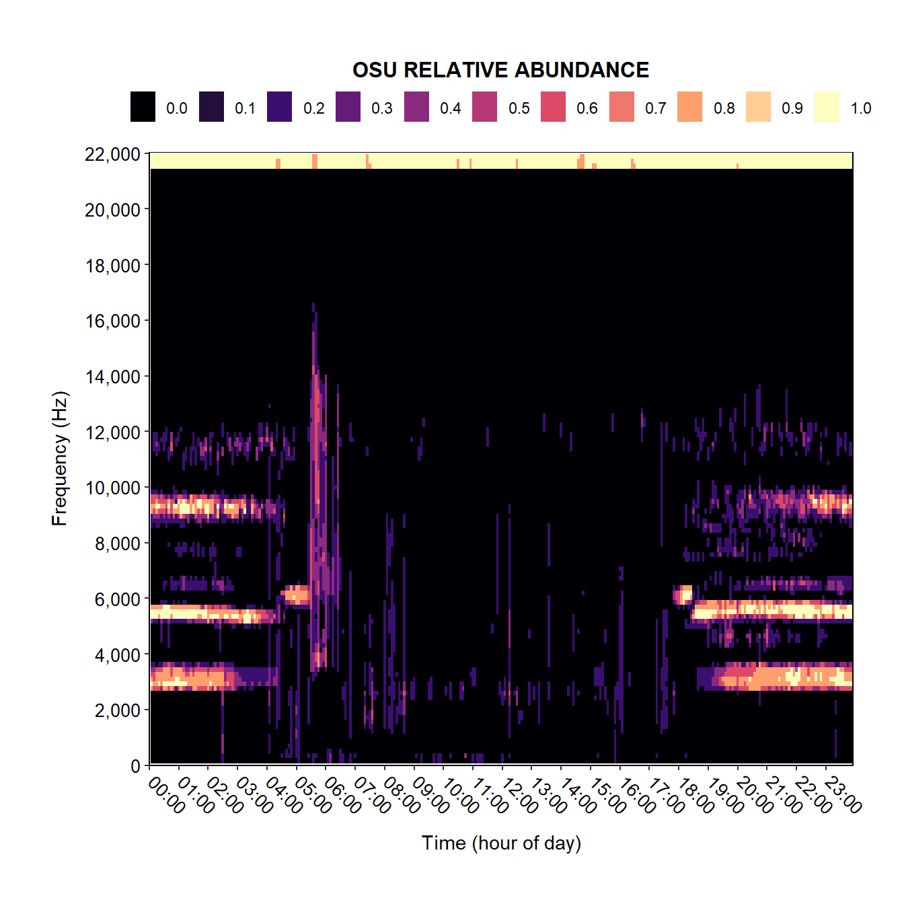
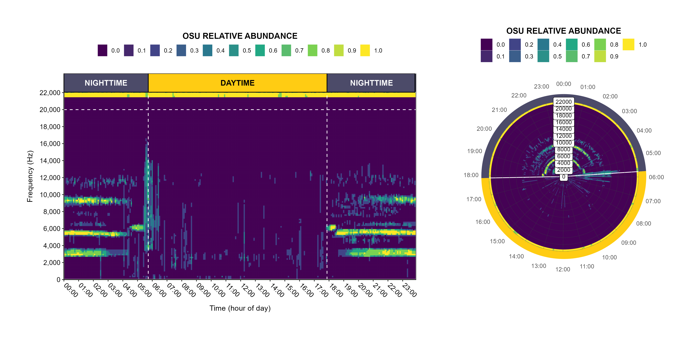

soundscapeR R-package
Welcome!

Hi there!
Welcome to the case study vignette of the soundscapeR
R-package. Here, we demonstrate the use of the functions contained in
the package using data from a real-world ecological system. The goal of
soundscapeR is to provide a standardized analytical
pipeline for the computation, exploration, visualization, diversity
quantification and comparison of soundscapes using Hill numbers. The
package is designed to work with either continuous or regular-interval
long-duration acoustic recordings, and can quantify the diversity of
soundscapes using a range of different diversity types (richness,
evenness & diversity), spatial scales (alpha, beta and gamma
diversities), and spectro-temporal subsets.
If you are unfamiliar with the soundscapeR workflow, head
on over to Luypaert
et al. (2022) and take a look at the theoretical concepts. Moreover,
additional background information can be found on the GitHub landing
page for this R-package.
Without further ado, let’s get started!
Case study data
The study system
For the case study presented here, we will be comparing the soundscapes of two islands of differing size in the Balbina Hydroelectric Reservoir (BHR; Fig. 1) in the Brazilian Amazon. The BHR is one of the largest hydroelectric reservoirs on Earth and was formed when a tributary of the Amazon, the Uatumã River, was dammed in 1987, turning the former hilltops of primary continuous forest into > 3,500 islands spanning an area of approximately 300,000 ha (Bueno and Peres 2019). The artificial tropical rainforest archipelago now contains islands spanning a wide range of sizes, ranging from 0.2 to 4,878 ha.

Figure 1: An aerial photograph of the Balbina Hydroelectric Reservoir, showcasing a highly fragmented landscape consisting of many islands of different sizes. Picture credit belongs to Luke Gibson.
Long-duration acoustic data was collected at 151 plots on 74 islands (size range: 0.45-1699 ha) and 4 continuous forest sites at the BHR between July and December 2015. The number of plots per island was proportional to the habitat area associated with each island, and varied between 4-10 for continuous forest sites and 1-7 for islands. At each plot, a passive acoustic sensor (an LG smartphone enclosed in a waterproof case linked to an external omnidirectional microphone) was attached to a tree trunk at 1.5m height and set to record the soundscape for 1 minute every 5 minutes for 4-10 days at a sampling rate of 44,100 Hz using the ARBIMON Touch application.
Why the BHR?
Previous work has shown that the soundscape diversity metrics that
can be computed using the soundscapeR R-package are a good
proxy for the taxonomic diversity at the Balbina Hydroelectric Reservoir
(Luypaert
et al. 2022). Moreover, more recently, we showed that the soundscape
richness is sensitive to one of the most fundamental patterns in
ecology, the positive scaling of richness with island size, which we
termed the soundscape-area relationship (SSAR - see Luypaert et
al. 2023).
Clearly, the BHR is an informative system to explore how soundscapes can
be used to uncover ecology’s secrets. As such, in this case study, we
investigate the soundscapes of two islands of differing size to
demonstrate the steps in the soundscapeR workflow.
The selected islands
For this case study, we will be looking at the soundscapes of two islands at the BHR: Andre island (2.08 ha) and Mascote island (668.03 ha). Since the number of plots at which we collected soundscape data is proportional to the island size, we will use acoustic data for 1 plot at Andre island and 4 plots at Mascote island (Fig. 2). At each of these plots, sound was recorded for 1 minute every 5 minutes for 5 days (1440 1-min sound files per plot).

Figure 2: A schematic representation of the islands used in this case study.
The raw sound files for these 5 plots on 2 island can be downloaded from the online repository.
If you wish to follow along with this tutorial, download the raw sound files from the link above and unzip the downloaded folder. Go inside the unzipped directory and copy the file path to the output_dir object below:
output_dir <- "PASTE_THE_FULL_PATH_TO_THE_LOCATION_OF_THE_DOWNLOADED_AND_UNZIPPED_FILES_HERE"
folder_locs <- list.dirs(path = output_dir, recursive = FALSE)Inside the unzipped directory, you will find 5 zipped folders. Unzip each of these to the same location. Now proceed with the code below.
The workflow
Before we start
Before starting the practical part of the case study, first, we will
download and install the soundscapeR R-package from GitHub
and load it into R.
If you haven’t already installed the package, uncomment the
first command below and run the code chunk:
# devtools::install_github(repo = "ThomasLuypaert/soundscapeR")
library(soundscapeR)Workflow overview
The Hill-based diversity quantification of soundscapes
presented in Luypaert
et al. (2022) consists of three key steps:
Step 1: Grouping sounds into Operational Sound Units (OSUs) and evaluating OSU presence in each sample of the 24h acoustic trait space
Step 2: Assessing the prevalence (or incidence) of OSUs across the recording period
Step 3: Quantifying the soundscape diversity using the framework of Hill numbers
To simplify the use of the soundscapeR package, we
created an S4-object which we term a
‘soundscape’ object. This data object has a
formally defined structure consisting of slots, containing all relevant
metadata and data objects that are generated during the workflow (step 1
and 2). The soundscape object forms the basis on which all functions
downstream in the workflow are applied (step 3). Using this
object-oriented programming approach ensures that metadata only needs to
be entered once and is remembered downstream. Moreover, all chosen
parameters in the workflow are stored by the soundscape object and can
be accessed easily. Finally, the slots containing the various metadata
and data objects have strict expectations of what each data input looks
like, thus minimizing the chance of accidental errors.
Take a look at Figure 3 for an overview of the
soundscapeR workflow:
Figure 3: A schematic overview of the soundscapeR workflow
As you can see, there are four phases to the
soundscapeR workflow:
Phase 1: Detect where the raw sound files are located using the
ss_find_filesfunction and assess that all the files are in order using thess_assess_filesfunction
Phase 2: Prepare a soundscape object using the
ss_index_calcfunction for index calculation and thess_createfunction for calculating OSU presence and incidence across the recording period
Phase 3: Explore the diversity of a single soundscape using the
ss_heatmap,ss_diversity,ss_evenness, andss_diversity_plotfunctions
Phase 4: Compare the diversity of multiple soundscapes using the
ss_compare,ss_pcoa,ss_divpart, andss_pairdisfunctions
Below, we will go over each of these phases and show you how to use each function using the case study data outlined above.
Phase I: Preparing soundscapes
1.1. Managing sound files: ss_find_files and
ss_assess_files
Before getting into the details of the workflow, let’s talk about sound files, file naming, and the expected file structure. At this point, we assume you’ve successfully gone out and collected soundscape recordings for a certain period of time at one or multiple sites of interest. These files are now stored somewhere on your device, external hard drive, or HPC.
To manage these sound files and extract the required
information from them, the soundscapeR workflow expects
files to be named using the following format:
SITENAME_YYYYMMDD_HHMMSS.wav
Moreover, the soundscapeR package expects the
sound files to be stored in directories following one of the following
structures:
Figure 4: A schematic overview of the expected file structure
Now, we can tell soundscapeR where to look for these
files using the ss_find_files function. This function will
automatically detect all the soundfiles in a parent directory and all
subdirectories, and save the location to each detected sound file in a
list that maintains the directory architecture shown in Fig 4.
Let’s take a look at the input parameters of the
ss_find_files function:
Function input parameters
- parent_directory:
The full-length path to a directory containing .wav files, or a directory containing directories with .wav files. If the latter, this function will look for .wav files recursively in all subdirectories.
As we can see, the ss_find_files function only takes a
single input argument: the name of a directory containing .wav
files, or a parent directory containing named directories with
.wav files.
Let’s give this a try:
# Find the file locations
filelocs <- ss_find_files(parent_directory = output_dir)
names(filelocs) <- c("Andre", "Mascote_A1", "Mascote_A2", "Mascote_B1", "Mascote_B2")
# Show us what the fileloc output looks like
summary(filelocs)## Length Class Mode
## Andre 1440 -none- character
## Mascote_A1 1440 -none- character
## Mascote_A2 1440 -none- character
## Mascote_B1 1440 -none- character
## Mascote_B2 1440 -none- characterhead(filelocs[[1]])## [1] "G:/soundscapeR_paper_data/Andre/G10_Andre_20151010_155500Z.wav"
## [2] "G:/soundscapeR_paper_data/Andre/G10_Andre_20151010_160000Z.wav"
## [3] "G:/soundscapeR_paper_data/Andre/G10_Andre_20151010_160500Z.wav"
## [4] "G:/soundscapeR_paper_data/Andre/G10_Andre_20151010_161000Z.wav"
## [5] "G:/soundscapeR_paper_data/Andre/G10_Andre_20151010_161500Z.wav"
## [6] "G:/soundscapeR_paper_data/Andre/G10_Andre_20151010_162000Z.wav"The ss_find_files function created a list of length 5
(one for each soundscape plot in our case study). Each list element
contains a 1,440 character strings which gives the file path to each
1-minute sound file for each soundscape.
However, it is possible that something went wrong during the sound
recording stage, or when we transferred the files from our acoustic
sensor to our storage device, leading to missing files or gaps in the
soundscape recordings. This is where the ss_assess_files
function comes into play. The ss_assess_files function will
automatically detect the sampling regime of the study, and based on
this, will check whether: (i) any files are missing; and (ii) all
soundscapes in the filelocs list had the same sampling
regime.
Let’s give this a try:
filelocs <- ss_assess_files(file_locs = filelocs,
full_days = FALSE)## Sampling regime for study: 1 minute in 5 minutes
## Number of files per day: 288 files
## The data still contains partially sampled days - be careful with downstream analysis...As we can see, the ss_assess_files function successfully
detected that our sound was sampled for 1 minute every 5 minutes,
resulting in 288 files per day. Since no other error message was thrown,
it appears no files were missing.
Let’s take a look at what would happen if files were missing:
# Simulate a soundscape with missing data
filelocs_missing <- filelocs
filelocs_missing[[1]] <- filelocs_missing[[1]][-seq(1, length(filelocs_missing[[1]]), 5)]
# Run the ss_assess_files function
filelocs_missing <- ss_assess_files(file_locs = filelocs_missing,
full_days = FALSE)## Irregular timeinterval detected for: Andre
## Based on the expected sampling regime, there are missing files...## Error in ss_assess_files(file_locs = filelocs_missing, full_days = FALSE): Irregular timeintervals detected - check filesAs you can see, the ss_assess_files function generates
an error message if the files in fileloc deviate from the expected
sampling regime.
Finally, using the ss_assess_files function, we can also
remove any sound files from the fileloc object that are not
part of a full soundscape sample (24h period). We do this because,
otherwise, we would have an uneven number of samples per time of day. To
do so, we use the full_days = TRUE argument.
Let’s give this a try:
# Create a soundscape with sound files that are not part of a complete soundscape sample
filelocs_incomplete <- filelocs
filelocs_incomplete[[1]] <- filelocs[[1]][5:length(filelocs[[1]])]
# Run ss_assess_files again
filelocs_incomplete_fixed <- ss_assess_files(file_locs = filelocs_incomplete,
full_days = TRUE)## Sampling regime for study: 1 minute in 5 minutes
## Number of files per day: 288 files
## The file_locs argument has been subsetted to contain only full sampling daysIt seems like there was an incomplete soundscape sample,
ss_assess_files removed some soundfiles so only complete
soundscape samples (24h period) were retained.
Let’s have a look at the before and after:
# Before
length(filelocs_incomplete[[1]])## [1] 1436# After
length(filelocs_incomplete_fixed[[1]])## [1] 1152The ss_assess_files function has detected an incomplete
soundscape sample and removed sound files until the ‘previous’ complete
sample was found - in this case 1,152 files, or 4 full sampling days
(288 * 4 = 1,152).
Great, now that we know how these two file management functions work, we can proceed!
1.2. Calculate ecoacoustic indices: The ss_index_calc
function
A. In theory
To quantify the presence of OSUs in each day of the recording period,
first, we will make use the Acoustic Cover (CVR)
spectral acoustic index (also known as ACTsp in the Towsey
2017 technical report) to capture the acoustic properties of sound
in our 1-minute recordings. Per sound file, this index captures the
fraction of cells in each noise-reduced frequency bin whose value
exceeds a 3 dB threshold. By using this spectral acoustic index, we
greatly condense the amount of information contained in these sound
files while retaining important data on their time-frequency features.
For more information on spectral acoustic indices are their use, check
out this
website.
To calculate these spectral indices, we will use the
ss_index_calc() function. This function follows the
protocol outlined in Towsey
2017, and per 1-minute sound file, produces a vector of CVR-index
values, one for each frequency bin of the spectrogram.
Let’s take a look at the input parameters of the
ss_index_calc function:
Function input parameters
filelist:
file_list A list containing the full-length path to each ‘.wav’ file in a folder. This list can be obtained using thess_find_filesandss_assess_filesfunctions.outputdir:
The full-length path to an output directory on your device. If not specified, will default to the location where the raw sound files are saved.window:
The window length used for the Fast-Fourier Transformation. Defaults to 256.theta:
The cut-off dB-value above which sound is considered present in a frequency bin. Defaults to 3 dB.parallel:
A boolean operator indicating whether parallel processing should be used to calculate the CVR-index files.
In case the duration of each sound file is longer than 1 minute, the function cuts the files into 1-minute segments before index calculation.
B. In practice
Below, you can find the code to calculate the CVR-index for all sound files in a folder.
# ss_index_calc(fileloc = "filepath_here",
# outputloc = "filepath_here",
# samplerate = 44100,
# window = 256,
# parallel = FALSE)Because the index calculation can be time consuming, for the purposes of this vignette, here we will download the CVR-index ‘.csv’ files we previously calculated from the KNB repository:
# 1. Download the metajam package
# install.packages("metajam")
# 2. Set folder location to save data
setwd("G:/soundscapeR_case_study")
dir.create(paste0(getwd(), "/case_study_data"))
output_dir <- paste0(getwd(), "/case_study_data")
# 3. Download data and metadata
# metajam::download_d1_data(data_url = "https://knb.ecoinformatics.org/knb/d1/mn/v2/object/urn%3Auuid%3Acfccc678-27f3-473a-b34a-b4b5d4371e6b", path = ".")
#
# # 4. Unzip
#
# to_unzip <- list.files(output_dir, full.names = TRUE)
#
# sapply(to_unzip, function(x) unzip(zipfile = x,exdir = output_dir, overwrite = TRUE))
# Specify the folder locations
folder_locs <- list.dirs(path = output_dir, recursive = FALSE)In addition to the sound data, we will also require some metadata for the downstream analysis, so let’s prepare a metadata object.
Make a metadata object:
island_metadata <- data.frame(plot = c("Andre", "Mascote_A1", "Mascote_A2", "Mascote_B1", "Mascote_B2"),
first_day = c("2015-10-10", rep("2015-10-16", 4)),
lat = c(-1.58462, -1.64506, -1.6489, -1.64406, -1.65936),
lon = c(-59.87211, -59.82035, -59.83297, -59.84817, -59.83546))
island_metadata$folderloc <- folder_locs1.3. Create a soundscape: The ss_create function
A. In theory
Following index computation, we use the ss_create
function to create a soundscape object.
The ss_create function is a wrapper function
combining the functionality of three functions in sequence:
ss_index_merge: Performs chronological concatenation of the CVR index files into a time-frequency-index value data frame
ss_binarize: Converts the raw CVR values of OSUs into a binary detection (1)/ non-detection (0) variable for each day in the recording period
ss_aggregate: Calculates the incidence of OSUs across all sampled days
Although each of these sub-functions can be used individually, in
most cases, the ss_create function will cover the needs of
the user in a single step.
Let’s take a look at the input parameters for the
ss_create function:
Function input parameters
fileloc:
The full-length path to the folder containing the sound files for which to compute indices. In our case, for each plot, we stored the sound files in a separate folder which we will supply to the fileloc argument.samplerate:
The number of times the sound was sampled each second. This is a fixed parameter determined by your recording setup, although downsampling to a lower sampling rate is possible.window:
A variable of the Fast Fourier Transformation, expressed as the number of samples. The window size of choice depends on the fundamental frequency, intensity and change of the signal of interest, and influences the temporal and frequency resolution of the analysis. The window size is generally a power of 2.index:
The acoustic index of interest. Options are “BGN”, “PMN”, “CVR”, “EVN”, “ENT”, “ACI”, “OSC”, “SPT”, “RHZ”, “RVT”, “RPS” and “RNG”. For a brief description of indices, consult the ss_index_calc documentation. Note that the soundscape diversity metrics that can be calculated downstream have only been tested using the Acoustic Cover (CVR) index.date:
The first day of the recording period. Used for managing time-objects in R. Formatted as “YYYY-mm-dd.lat:
The latitude of the site at which the sound files were collected. Coordinates should be specified in decimal degrees as a numerical variable.lon:
The longitude of the site at which the sound files were collected. Coordinates should be specified in decimal degrees as a numerical variable.method:
The algorithm used to determine the threshold. Options are “IJDefault”,“Huang”, “Huang2”, “Intermodes”, “IsoData”, “Li”, “MaxEntropy”, “Mean”, “MinErrorI”, “Minimum”, “Moments”, “Otsu”, “Percentile”, “RenyiEntropy”, “Shanbhag”, “Triangle”, “Yen”, and “Mode”. To specify a custom threshold, use method=“Custom” in combination with the value argument. Consult http://imagej.net/Auto_Threshold for more information on algorithm methodologies.value:
Optional argument used to set a custom threshold value for binarization - used in combination with method=“Custom”.output:
Determines whether the function returns the raw total number of detections per time during the recording period (output = “raw”), or the incidence frequency (total number of detections / number of recordings for that time - output = “incidence_freq).
The ss_create function returns an S4 soundscape
object.
B. In practice
Now that we know which input parameters to provide, let’s give this a
try. We will prepare the soundscape objects for our five plots on the
two islands described above. We can use the lapply function
to iterate over the metadata we previously saved.
Let’s run the ss_create function:
balbina <- vector("list")
for (i in 1:nrow(island_metadata)){
balbina[[i]] <- ss_create(fileloc = island_metadata$folderloc[i],
samplerate = 44100,
window = 256,
index = "CVR",
date = island_metadata$first_day[i],
lat = island_metadata$lat[i],
lon = island_metadata$lon[i],
method = "IsoData",
output = "incidence_freq")
}
names(balbina) <- c("Andre", "Mascote_A1", "Mascote_A2", "Mascote_B1", "Mascote_B2")Doing so, we will get a list of soundscape objects for further analysis. But before we proceed with phase two of the pipeline, let’s have a closer look at this ‘soundscape’ object in the next section!
1.4. Introducing the soundscape object
As we previously mentioned, the ss_create function
requires us to provide some additional metadata information, as well as
several parameters on how the data should be processed. Using the
ss_create function, we are creating a new type of data
object which stores all the relevant information, and will form the
basis on which all subsequent functions in the workflow are
performed!
Let’s take a look at this newly created object for Andre island:
# Let's see what class this object is:
summary(balbina[["Andre"]])## Length Class Mode
## 1 soundscape S4This new data object is an ‘S4’ object of the class soundscape.
# Let's see what sort of information this object holds
balbina[["Andre"]]##
## 1. Soundscape metadata
##
## Sampling point metadata:
##
## First day of recording: 2015-10-10
## Latitude of sampling point: -1.58462
## Longitude of sampling point: -59.87211
## Time zone of sampling point: America/Manaus
## Sunrise time at sampling point: 05:43:36
## Sunset time at sampling point: 17:51:47
##
## Acoustic index metadata:
##
## Path to raw sound files: G:/soundscapeR_paper_data/Andre
## Spectral index used: CVR
## Sampling rate of the recording: 44100 Hz
## Window size used in FFT: 256 samples
## Frequency resolution: 172.2656 Hz
## Temporal resolution: 0.005804989 ms
##
## Data frame binarization metadata:
##
## Used binarization algorithm: IsoData
## Binarization threshold: 0.16
##
## Aggregated data frame metadata:
##
## Output format: incidence_freq
## Data frame frequency range: 172 - 22050 Hz
## Data frame time range: 00:00:00 - 23:55:00
##
## 2. Soundscape data
##
## Merged data frame data:
##
## Columns 1 to 5 and rows 1 to 5 displayed
##
## 15:55:00 16:00:00 16:05:00 16:10:00 16:15:00
## 22050 0.19408888 0.18264127 0.18909356 0.18763659 0.20761786
## 21877 0.45009887 0.48069518 0.49037361 0.48579457 0.51306067
## 21705 0.49172651 0.50431887 0.50005203 0.50993860 0.51930482
## 21533 0.31439276 0.34571756 0.31616193 0.33884900 0.32802581
## 21360 0.01966906 0.02580914 0.01821209 0.02435217 0.01842023
##
## Binarized data frame data:
##
## Columns 1 to 5 and rows 1 to 5 displayed
##
## 15:55:00 16:00:00 16:05:00 16:10:00 16:15:00
## 22050 1 1 1 1 1
## 21877 1 1 1 1 1
## 21705 1 1 1 1 1
## 21533 1 1 1 1 1
## 21360 0 0 0 0 0
##
## Aggregated data frame data:
##
## Aggregated data frame:
##
## Columns 1 to 5 and rows 1 to 5 displayed
##
## 00:00:00 00:05:00 00:10:00 00:15:00 00:20:00
## 22050 0.6 1 0.6 0.6 1
## 21877 1.0 1 1.0 1.0 1
## 21705 1.0 1 1.0 1.0 1
## 21533 1.0 1 1.0 1.0 1
## 21360 0.0 0 0.0 0.0 0
##
## Aggregated data frame per time:
##
## First list element displayed: 00:00:00
##
## Columns 1 to 5 and rows 1 to 5 displayed
##
## 00:00:00 00:00:00.1 00:00:00.2 00:00:00.3 00:00:00.4
## 22050 0 1 0 1 1
## 21877 1 1 1 1 1
## 21705 1 1 1 1 1
## 21533 1 1 1 1 1
## 21360 0 0 0 0 0
##
## Number of soundscape samples per time (sampling effort):
##
## List elements 1 to 5 displayed
##
## $`00:00:00`
## [1] 5
##
## $`00:05:00`
## [1] 5
##
## $`00:10:00`
## [1] 5
##
## $`00:15:00`
## [1] 5
##
## $`00:20:00`
## [1] 5As we can see, this objects holds two types of information:
Metadata: Information regarding the data collection and which parameters where used in the different steps of preparing the soundscape object
Soundscape information: Various intermediate data objects that are created as the
ss_createfunction works its way through the index concatenation, binarization and computation of OSU abundance steps.
To access the information stored in this object, we will use the ‘@’ symbol.
Let’s take a look at which types of data are stored in the object so far:
# Let's check what sort of data collection metadata is stored in the object
print(paste0("First day of data collection: ", balbina[["Andre"]]@first_day))## [1] "First day of data collection: 2015-10-10"print(paste0("Latitude at data collection site: ", balbina[["Andre"]]@lat))## [1] "Latitude at data collection site: -1.58462"print(paste0("Longitude at data collection site: ", balbina[["Andre"]]@lon))## [1] "Longitude at data collection site: -59.87211"print(paste0("Time zone at data collection site: ", balbina[["Andre"]]@tz))## [1] "Time zone at data collection site: America/Manaus"print(paste0("Sunrise at time of data collection: ", balbina[["Andre"]]@sunrise))## [1] "Sunrise at time of data collection: 2015-10-10 05:43:36"print(paste0("Sunset at time of data collection: ", balbina[["Andre"]]@sunset))## [1] "Sunset at time of data collection: 2015-10-10 17:51:47"The ss_create function has automatically calculated a
set of important ecological variables, such as sunrise and sunset times,
and timezones, based on the first day of recording and geographical
coordinates.
Let’s continue looking at the data stored in the soundscape object:
# Let's check what sort of metadata the object has stored regarding past data processing steps
print(paste0("Where are the raw sound files located: ", balbina[["Andre"]]@fileloc))## [1] "Where are the raw sound files located: G:/soundscapeR_paper_data/Andre"print(paste0("What acoustic index are we using: ", balbina[["Andre"]]@index, " index"))## [1] "What acoustic index are we using: CVR index"print(paste0("What was the samplerate used to collect the data: ", balbina[["Andre"]]@samplerate, " Hz"))## [1] "What was the samplerate used to collect the data: 44100 Hz"print(paste0("What was the window length used during the FFT: ", balbina[["Andre"]]@window, " samples"))## [1] "What was the window length used during the FFT: 256 samples"The soundscape object has recorded where our raw data files are stored, which acoustic index we’re working with, what sampling rate was used during data collection, and what window length was used during the acoustic index calculation.
Let’s take a look at some of the data frames we created by
running the ss_create function:
head(balbina[["Andre"]]@merged_df)[,1:5]## 15:55:00 16:00:00 16:05:00 16:10:00 16:15:00
## 22050 0.19408888 0.18264127 0.18909356 0.18763659 0.20761786
## 21877 0.45009887 0.48069518 0.49037361 0.48579457 0.51306067
## 21705 0.49172651 0.50431887 0.50005203 0.50993860 0.51930482
## 21533 0.31439276 0.34571756 0.31616193 0.33884900 0.32802581
## 21360 0.01966906 0.02580914 0.01821209 0.02435217 0.01842023
## 21188 0.01207202 0.01800395 0.01186388 0.01592257 0.01321678As we previously mentioned, the first step performed by the
ss_create function is the chronological concatenation of
the CVR-index files for a site into a time-frequency-index value data
frame. This data frame is stored in the ‘@merged_df’ slot, and contains the
time-of-recording as column names, the frequency bins as row names, and
the CVR-index for each time-frequency pair as values. Each column
contains the spectral index values of a single sound file.
Let’s inspect this data frame a little closer:
# How many columns does the data frame contain?
paste0("The data frame contains: ", ncol(balbina[["Andre"]]@merged_df), " columns")## [1] "The data frame contains: 1440 columns"# What are the column names?
head(colnames(balbina[["Andre"]]@merged_df))## [1] "15:55:00" "16:00:00" "16:05:00" "16:10:00" "16:15:00" "16:20:00"tail(colnames(balbina[["Andre"]]@merged_df))## [1] "15:25:00" "15:30:00" "15:35:00" "15:40:00" "15:45:00" "15:50:00"As we said, the number of columns equals the number of sound files collected during the acoustic survey - in this case, 1440 sound files. The name of each column corresponds to the time of day at which the recording was collected.
Next, let’s take a look at the rows:
# How many rows does the data frame contain?
paste0("The data frame contains: ", nrow(balbina[["Andre"]]@merged_df), " rows")## [1] "The data frame contains: 128 rows"# What do these row names look like?
# The first five names
paste0("The first five rownames: ", paste0(rownames(balbina[["Andre"]]@merged_df)[1:5], collapse = ", "))## [1] "The first five rownames: 22050, 21877, 21705, 21533, 21360" # The last five names
paste0("The last five rownames: ", paste0(rownames(balbina[["Andre"]]@merged_df)[123:128], collapse = ", "))## [1] "The last five rownames: 1033, 861, 689, 516, 344, 172"The data frame contains 128 rows, each corresponding to a unique frequency bin. The frequency bins range from 0 - 22,050 Hz, and are of approximately 172 Hz width.
Now, let’s inspect the CVR-index values:
# What is the minimum CVR-index value in our data frame?
paste0("The minimum CVR-value in our data frame is: ", min(balbina[["Andre"]]@merged_df))## [1] "The minimum CVR-value in our data frame is: 0"# What is the maximum CVR-index value in our data frame?
paste0("The max CVR-value in our data frame is: ", max(balbina[["Andre"]]@merged_df))## [1] "The max CVR-value in our data frame is: 0.672286398168384"As we can see, in our dataset, the CVR-index values range between 0 - 0.67. Remember, CVR-index values capture the proportion of cells in each noise-reduced frequency bin of a sound file that exceeds a 3-dB amplitude threshold. As such, the values can technically range between 0-1.
After the CVR-indices for a soundscape recording of a site have been
chronologically concatenated, instead of using the raw CVR-values that
we computed for every OSU in each 24h sample of the soundscape, the
ss_create function determines a threshold value for each
site, and converts the OSU’s CVR-index values into a binary detection
(1) / non-detection (0) variable per 24h sample based on this threshold.
This step is aimed at detecting the presence of sound for every OSU in
each 24h sample of acoustic trait space while removing low-amplitude or
transient sounds, which potentially have a non-biological origin, from
the data. In this way, we hope to capture the acoustic structure of the
soundscape while removing background noise.
We can see that the soundscape objects produced by
the ss_create function has some new metadata related to
this binarization step:
# Which threshold algorithm was used for binarization?
paste0("The ", balbina[["Andre"]]@binarization_method, " method was used for binarization")## [1] "The IsoData method was used for binarization"# Which threshold was used for binarization?
paste0("The threshold used for binarization was: ", balbina[["Andre"]]@threshold)## [1] "The threshold used for binarization was: 0.16"Additionally, a binarized_df data frame was added to the
object.
Let’s inspect this data frame:
# What are the dimensions of the binarized dataframe?
dim(balbina[["Andre"]]@binarized_df)## [1] 128 1440# What are the unique values contained in this data frame?
unique(unlist(balbina[["Andre"]]@binarized_df))## [1] 1 0As expected, the new binarized data frame contains the same number of
rows and columns as the merged_df data frame. However,
whereas previously we had CVR-index values ranging between anywhere
between 0-1, due to the binarization step, the values are now strictly 0
or 1.
Finally, after binarization, the ss_create function
calculates the relative abundance of OSUs across all 24h samples of
acoustic trait space for a site. For Andre island, we have five 24h
samples (5 recording days) per plot.
To do this, the function uses an incidence-based approach. Previously,
the ss_create function computed the detection (1) /
non-detection (0) of each OSU in each 24h soundscape sample. Next, per
OSU, the function takes the mean of this binary variable across all 24h
soundscape samples to get the relative frequency by which each OSU was
detected. To avoid confusion between the frequency of OSU detection and
the sound frequency (in Hz), we’ll refer to this OSU importance value as
the ‘relative abundance’.
The soundscape object contains some information related to
this step. Let’s investigate the soundscape object for Andre
island to see what is new.
What are the dimensions of the new ‘aggregated_df’
data frame?
# First, let's check out the new 'aggregated_df' data frame
paste0("The aggregated_df data frame has ",
nrow(balbina[["Andre"]]@aggregated_df),
" rows")## [1] "The aggregated_df data frame has 128 rows"paste0("The aggregated_df data frame has ",
ncol(balbina[["Andre"]]@aggregated_df),
" columns")## [1] "The aggregated_df data frame has 288 columns"
The number of rows in the ‘aggregated_df’ data frame that was
added to the soundscape object is still 128, one for each
frequency bins resulting from the Fast Fourier Transformation. However,
the number of columns in the ‘aggregated_df’ data frame is 288
- that is five times less than the ‘binarized_df’ data frame!
Well, since we averaged the detection/non-detection values across five
24h samples of the acoustic trait space, this makes sense…
Now, what range of values do the OSU relative abundances
take?
paste0("The relative abundance of OSUs can take the following values: ",
paste(sort(unique(unlist(balbina[["Andre"]]@aggregated_df))), collapse = ","))## [1] "The relative abundance of OSUs can take the following values: 0,0.2,0.4,0.6,0.8,1"
The relative abundance can take 6 values: 0, 0.2, 0.4, 0.6, 0.8 and 1.
This makes sense. If an OSU was detected in 0 out of 5 soundscape
samples, its relative abundance is 0. If an OSU was detected in 5 out of
5 soundscape samples, its relative abundance is 1. If it was detected
somewhere in between, say 3 out of 5 samples, its relative abundance
would be 0.6.
Great, we’ve got a soundscape object that contains a dataframe with our
a unit of diversity measurement (OSUs) with an associated importance
value (the relative abundance). We now have all the ingredients to start
the next part of the workflow: exploration and diversity quantification
of a single soundscape object.
The remaining functions in the soundscapeR
package can be divided into two types:
Phase 2: Functions for exploring and visualizing the diversity of a single soundscape
Phase 3: Functions for visualizing and contrasting the diversity of multiple soundscapes
Phase II: Exploring a single soundscape
The soundscapeR package contains a range of functions to
explore the diversity patterns of a single soundscape object. These
include functions for visualizing the overall soundscape
(ss_heatmap), functions for quantifying soundscape
diversity metrics for a range of spectro-temporal subsets
(ss_diversity & ss_evenness), and
functions for visualizing diversity patterns throughout the day or for
different frequency bins (ss_diversity_plot).
We will go deeper into each of these functions in the following
section.
2.1. The ss_heatmap function
The ss_heatmap function allows us to visualize the
distribution and relative abundance of OSUs in the 24h acoustic trait
space. This function is a true workhorse - it is highly flexible,
allowing us to subset the soundscape by specific time or frequency
coordinates, portray the soundscape in either Cartesian or polar
coordinates, annotate the soundscape with the sunset and sunrise time,
and many more. Below, we’ll provide an overview of
ss_heatmap’s abilities.
Let’s take a look at the soundscape for Andre island. We will start
with the ss_heatmap function in it’s most basic form and
add progressively more advanced plotting arguments.
A basic heatmap
In it’s most basic form, the ss_heatmap function only
takes a single argument.
Mandatory input parameters
- soundscape_obj:
a soundscape object produced by the ss_create function (or ss_index_merge, ss_binarize and ss_aggregate functions applied in sequence).
In practice, the code looks as follows:
ss_heatmap(soundscape_obj = balbina[["Andre"]])
The heatmap shows us that, above 12,000 Hz, Andre’s soundscape is
pretty empty. We can also see that most of the sound is present at night
and the daytime soundscape is much more impoverished. The, the yellow
band at the top is because the recorder was not able to record sound at
this frequency - we will see how to remove this from the heatmap at a
later stage.
Even in it’s most simple form, the heatmap reveals quite a lot about a
soundscape. Without looking at species-specific information or listening
to sound files, we have just obtained ecologically relevant information
from 24 full hours of recording (1440 1-minute files). Now, imagine you
have many sites and longer recording periods… This is where the true
value of the soundscapeR workflow lies!
A polar heatmap
In addition to the base heatmap we produced above, the
ss_heatmap function also allows us to plot the heatmap in a
polar coordinate system.
Parameters to change the coordinate system
- type:
A character string. One of either “regular” or “polar”. If set to “regular”, produces a regular rectangular heatmap. If set to “polar”, produces a heatmap in the polar coordinate system.
To understand what this argument does, let’s try type = “polar”:
ss_heatmap(soundscape_obj = balbina[["Andre"]],
type = "polar")
The type arguments let’s us choose whether to plot
regular (rectangular) heatmaps, like in the previous example, or polar
heatmaps. And why would we want to do this, you may ask? Well, a
rectangular heatmap distorts the relationships between sounds in the
acoustic trait space. Imagine two sounds, one that is produced at 15,000
Hz around 23:55h at night, and the other at 15,000 Hz at 00:05h in the
morning. On our rectangular heatmap, these two sounds would be perceived
as distant in the acoustic trait space, as they would be on opposite
ends. From an ecological and functional perspective, these sounds are
actually quite similar - they were produced at the same frequency at 10
minutes apart… The polar heatmap captures this relationship more
accurately.
An annotated heatmap
Next up, let’s have a look at how we can add some ecologically important varibles to this plot: the time of sunrise, sunset, and if applicable, the approximate boundary between the human-audible and ultrasonic frequency spectrum.
Parameters to add ecologically relevant variables
- annotate:
A Boolean operator. One of either TRUE or FALSE. If set to TRUE, annotates the heatmap with sunrise and sunset times and highlights the border between the audible and ultrasonic spectrum for human hearing.
Let’s try this out for the regular and polar heatmap:
# Regular heatmap
regular_heatmap_annotated <-
ss_heatmap(soundscape_obj = balbina[["Andre"]],
type = "regular",
annotate = TRUE)
# Polar heatmap
polar_heatmap_annotated <-
ss_heatmap(soundscape_obj = balbina[["Andre"]],
type = "polar",
annotate = TRUE)
# Combine
library(patchwork)
annotated_heatmaps <- regular_heatmap_annotated + polar_heatmap_annotated
annotated_heatmaps
With the addition of one simple argument, the ss_heatmap
function annotates the heatmap with the time of sunrise and sunset
(stored in the soundscape object) and the boundary between the
audible and ultrasonic spectrum. The part of the soundscape that occurs
in the day is highlighted in yellow, whereas the nighttime is
highlighted in blue.
Alter the axis labels
The ss_heatmap function also contains parameters to
change the aesthetics of the axis labels.
Parameters to change the axis label aesthetics
timeinterval:
A time interval for the x-axis. Options can be found in the scales::breaks_width documentation.freqinterval:
The frequency interval for the y-axis, expressed as a numeric value.
Let’s try this out for the Andre island soundscape using a regular heatmap with a 4 hour x-axis interval and 1000 Hz y-axis interval:
ss_heatmap(soundscape_obj = balbina[["Andre"]],
timeinterval = "4 hours",
freqinterval = 1000)## Warning: Removed 542 rows containing missing values (`geom_tile()`).
Subset the soundscape in the time or frequency domain
If we are only interested the a subset of the acoustic trait space,
the ss_heatmap function contains a number of parameters to
perform time-frequency subsetting.
Parameters to change subset the acoustic trait space
mintime:
The lower time limit for the x-axis, formatted as “HH:MM:SS”. Defaults to the earliest time for which data exists in the dataframe.maxtime:
The upper time limit for the x-axis, formatted as “HH:MM:SS”.Defaults to the latest time for which data exists in the dataframe.minfreq:
The lower frequency limit for the y-axis as a numeric value. Defaults to zero.maxfreq:
The lower frequency limit for the y-axis as a numeric value. Defaults to zero.
Let’s try visualizing the Andre island soundscape between 06:00h and 18:00h for frequencies between 0 - 11,000 Hz:
ss_heatmap(soundscape_obj = balbina[["Andre"]],
mintime = "06:00:00",
maxtime = "18:00:00" ,
minfreq = 0 ,
maxfreq = 11000)## Warning: Removed 27855 rows containing missing values (`geom_tile()`).
Alter the heatmap’s color aesthetics
We can also alter the color aesthetics that are mapped to the OSU relative abundance values in the heatmap.
Parameters to change the color aesthetics
palette:
A character string indicating the colormap option to use. Four options are available: “magma” (or “A”), “inferno” (or “B”), “plasma” (or “C”), “viridis” (or “D”, the default option) and “cividis” (or “E”). Consult this website for options.direction:
Sets the order of colors in the scale. If 1, the default, the regular order is followed. If -1, the order of colors is reversed.zero.black:
One of either TRUE or FALSE. If set to TRUE, absent OSUs with incidence zero will be colored black.
We can try to see what these do by adding them in one by one. Up first is the palette option. Let’s try them all on Andre island’s soundscape:
# Try the palettes one by one
color_1 <-
ss_heatmap(soundscape_obj = balbina[["Andre"]],
palette = "A")
color_2 <-
ss_heatmap(soundscape_obj = balbina[["Andre"]],
palette = "B")
color_3 <-
ss_heatmap(soundscape_obj = balbina[["Andre"]],
palette = "C")
color_4 <-
ss_heatmap(soundscape_obj = balbina[["Andre"]],
palette = "D")
color_5 <-
ss_heatmap(soundscape_obj = balbina[["Andre"]],
palette = "E")
# Combine into one plot
library(patchwork)
all_colors <- color_1 + color_2 + color_3 + color_4 + color_5
all_colors## Warning: Removed 542 rows containing missing values (`geom_tile()`).
## Removed 542 rows containing missing values (`geom_tile()`).
## Removed 542 rows containing missing values (`geom_tile()`).
## Removed 542 rows containing missing values (`geom_tile()`).
## Removed 542 rows containing missing values (`geom_tile()`).
With the palette option, we can choose which of the
viridis color palettes is used to visualize our soundscape.
Great, now let’s test the direction variable for the “magma” color palette:
# Try the direction options
direction_1 <-
ss_heatmap(soundscape_obj = balbina[["Andre"]],
palette = "magma",
direction = 1)
direction_2 <-
ss_heatmap(soundscape_obj = balbina[["Andre"]],
palette = "magma",
direction = -1)
# Combine into one plot
library(patchwork)
all_directions <- direction_1 + direction_2
all_directions## Warning: Removed 542 rows containing missing values (`geom_tile()`).
## Removed 542 rows containing missing values (`geom_tile()`).
The direction argument can be used to inverse the
color scales of the viridis R-packages, switching which colors are used
for low and high values respectively.
Finally, let’s see what the zero.black variable does for the regular ‘viridis’ palette:
# Try the direction options
zero_black_off <-
ss_heatmap(soundscape_obj = balbina[["Andre"]],
palette = "viridis",
zero.black = FALSE)
zero_black_on <-
ss_heatmap(soundscape_obj = balbina[["Andre"]],
palette = "viridis",
zero.black = TRUE)
# Combine into one plot
library(patchwork)
zero_black_all <- zero_black_off + zero_black_on
zero_black_all## Warning: Removed 542 rows containing missing values (`geom_tile()`).
## Removed 542 rows containing missing values (`geom_tile()`).
The zero.black argument takes all OSUs for which no
sound was detected (relative abundance = 0) and sets the color to zero
to increase the contrast with OSUs for which sound was detected. Be
careful using the zero.black argument with the
direction argument for some of the color
palettes.
Make your heatmap interactive
The ss_heatmap function can also be used to make
interactive heatmaps.
Parameters to make interactive heatmaps
- interactive:
A Boolean operator, one of either TRUE or FALSE. If set to TRUE, an interactive plot is produced using ggplotly.
Let’s make an interactive regular annotated heatmap for Andre island’s soundscape:
Try hovering your mouse over the interactive plot we just made. The
interactive argument lets us query the relative
abundance of each OSU for a specific time of day and frequency bin. This
way, we can see which sounds were more abundant or rare. For instance,
we can see that the relative abundance of the OSUs around 5,340 Hz
between 00:00h and 03:00h had a relative abundance of 1, meaning they
were detected in every sample. Conversely, we can see that the vertical
banding we picked up on between 19:00-20:00h only have a relative
abundance of 0.2 - they were detected in only 1 out of 5 sampling days.
This strengthens our suspicion that the vertical band may have been
created by a non-biological event, such as a rainstorm.
Save your heatmap
Finally, the ss_heatmap function contains a number of
arguments for saving your plot.
Parameters to save the plot
save:
A Boolean operator - one of either TRUE or FALSE. If set to TRUE, saves the plot using ggsave using the the ‘dir’, ‘filename’ and ‘device’ arguments.dir:
Path of the directory to save plot to: path and filename are combined to create the fully qualified file name. Defaults to the working directory. For more information consult ggsave.filename:
The file name without the extension. For more information consult ggsave.device:
Device to use. Can either be a device function (e.g. png()), or one of “eps”, “ps”, “tex” (pictex), “pdf”, “jpeg”, “tiff”, “png”, “bmp”, “svg” or “wmf” (windows only). Defaults to “png”. For more information consult ggsave.width:
If save=TRUE, expresses the width of the saved image in milimeters. Defaults to 100 mm.height:
If save=TRUE, expresses the height of the saved image in milimeters. Defaults to 100 mm.
These arguments rely on the ggsave
function from the ggplot2 package. For additional
information of how to save your soundscapeR heatmap,
consult the ggsave documentation.
2.2. A note on Hill numbers
Now that we know how to visually explore the diversity of our
soundscape, let’s get to quantifying how much diversity we’re actually
dealing with using the various soundscape metrics available in the
soundscapeR package.
To calculate the soundscape metrics, we use the analytical framework
of Hill numbers. In brief, Hill numbers provide a
unified statistical framework to measure biological diversity in all its
facets. The framework is highly robust and flexible, allowing us to
quantify different dimensions of diversity (e.g. taxonomic,
functional, phylogenetic and soundscape diversity). Doing so, we can
answer common scientific questions by measuring, estimating,
partitioning, and comparing different diversity types using a common
analytical framework. Although a plethora of indices has been proposed
to measure diversity, there is a growing consensus that Hill numbers are
the most appropriate framework to separate system diversity into its
various components.
Want to know more about Hill numbers? For a deep dive, visit this
website and this
GitHub tutorial!
For an overview of the benefits of Hill numbers over conventional
diversity indices, expand the section below. If you’re familiar with
Hill numbers, feel free to skip over this part.
CLICK HERE TO LEARN MORE ABOUT THE ADVANTAGES OF HILL NUMBERS
ADVANTAGES OF USING HILL NUMBERS
1. They abide by the replication principle:
If two equally diverse but completely distinct assemblages (no species in common, but an identical relative abundance distribution) are grouped, the diversity metric should double. This is true for Hill numbers, but not true for entropy based indices such as the Shannon and Simpson indices.2. They are expressed in the ‘effective number of species/units’:
The ‘Effective Number of Species’ (ENS) represents the number of equally abundant species or diversity units required to give a particular diversity index value. But why should we convert our index values to the ENS? Converting indices to their true diversities (ENS) gives them a set of common behaviors and properties. In this way, different indices can be more easily compared. For instance, this conversion deals with the non-linearity that troubles most classical diversity indices. The linear scaling provided by ENS allows the true comparison of diversities - if one community has diversity 5 (ENS), and the second community has diversity 15 (ENS), we can truly say the second community is three times as diverse as the first community. We could not say this with non-linear diversity indices, such as the Simpson and Shannon indices. Point 1 and 2 both relate to the linear scaling of diversity indices with the underlying diversity of the ecological community. For an overview of how Hill numbers scale linearly with the underlying diversity, but the Shannon and Simpson indices do not, visit this website.3. Some of the most commonly used diversity indices in literature can be converted into Hill numbers using simple transformations
4. Hill numbers can be used to quantify taxonomic, functional, phylogenetic and soundscape diversity:
Using this unified comparative framework gives metrics a common behavior, interpretation, and standardized unit. This ensures that comparisons between different dimensions of diversity represent real-world ecological patterns, and not mathematical stemming from different formulae.5. Hill numbers can be used to decompose diversity into its alpha, beta and gamma components using a simple multiplicative framework:
For Hill numbers, Gamma = Alpha x Beta. This simple multiplicative framework allows the decomposition of the metacommunity diversity into its local diversity and community turnover components.
Now that we know why we use Hill numbers, let’s have a look at how we can compute our soundscape metrics.
2.3. The ss_diversity and ss_evenness
functions
The ss_diversity function is used to compute the
soundscape richness and diversity values. The user can modulate the
importance of common or rare OSUs on the diversity values using the
q-parameter (order of diversity).
The ss_evenness function is used to compute the
soundscape evenness. In Luypaert
et al. (2022), we mentioned the soundscape evenness was calculated
as 2D (soundscape diversiy with q = 2)/0D (soundscape richness with q =
0), following Jost et
al. (2010). However, based on recent publications,
a more proper way to calculate the soundscape evenness is: (2D - 1) /
(0D - 1). Therefore, from here on out, we will only use the latter
equation for the calculation of the soundscape evenness.
Both functions allow the soundscape metrics to be computed at a range
of different scales and resolutions. For instance, the user can specify
custom time-frequency limits, calculate the soundscape metrics for
various built-in diurnal-phase presets (dawn, dusk, day, night), or
track the soundscape metrics at each unique time of day.
The soundscape richness and diversity for the whole soundscape
In their most basic forms, both the ss_diversity and
ss_evennessfunctions are used to compute soundscape metrics
for the whole soundscape. For this, the ss_diversity
function requires three main input parameters.
Mandatory function input parameters
soundscape_obj:
a soundscape object produced by the ss_create function (or ss_index_merge, ss_binarize and ss_aggregate functions applied in sequence).qvalue:
A positive integer or decimal number (>=0), most commonly between 0-3. This parameter modulates the sensitivity of diversity values to the relative abundance of Operational Sound Units (OSUs). A value of 0 corresponds to the richness, a value of 1 is the equivalent effective number of OSUs for the Shannon index, a value of 2 is the equivalent effective number of OSUs for the Simpson index.output:
A character string. Indicates the format in which the soundscape diversity is expressed. Options are “percentage” (the fraction between the observed soundscape diversity and the maximum possible soundscape diversity), or “raw” (the number of acoustically active OSUs in the soundscape). Defaults to “percentage”.
Let’s look at an example of what the various arguments are and change
about the index computation. First, we will use the
ss_diversity function to calculate the soundscape richness
(q=0) and diversity (at q=1 and q=2) for the
soundscape_obj of Andre island. We want the output as the
‘effective number of OSUs’.
Let’s try out the code:
# Soundscape richness
ss_diversity(soundscape_obj = balbina[["Andre"]],
qvalue = 0,
output = "raw")## [1] 5577# Soundscape diversity at q=1
ss_diversity(soundscape_obj = balbina[["Andre"]],
qvalue = 1,
output = "raw")## [1] 4532.245# Soundscape diversity at q=2
ss_diversity(soundscape_obj = balbina[["Andre"]],
qvalue = 2,
output = "raw")## [1] 3931.819As we can see, the higher the q-value, the less importance
is given to rare OSUs (with a low relative abundance), and thus the
lower the soundscape diversity metric.
Next, let’s calculate the same soundscape diversity metrics, but display the output as the percentage of the trait space that is filled with OSUs:
# Soundscape richness
ss_diversity(soundscape_obj = balbina[["Andre"]],
qvalue = 0,
output = "percentage")## [1] 15.12858# Soundscape diversity at q=1
ss_diversity(soundscape_obj = balbina[["Andre"]],
qvalue = 1,
output = "percentage")## [1] 12.2945# Soundscape diversity at q=2
ss_diversity(soundscape_obj = balbina[["Andre"]],
qvalue = 2,
output = "percentage")## [1] 10.66574
The output argument allows us to modulate how the
diversity value is returned and is one of either “raw” or
“percentage”. The “raw” option displays the soundscape
diversity as the effective number of OSUs in the soundscape, whereas the
“percentage” option returns the soundscape diversity as the
number of detected OSUs divided by the total number of detectable OSUs,
which is conceptually similar to the soundscape
saturation index described in Burivalova
et al. (2018), but calculated over a 24h period. The latter allows
us to compare the soundscape diversity between soundscapes with
different dimensions (a different number of total detectable OSUs due to
differences in the sampling regimes and window length).
The soundscape evenness for the whole soundscape
In contrast to the ss_diversity function, the
ss_evenness function only has one mandatory input
argument.
Mandatory function input parameters
- soundscape_obj:
a soundscape object produced by the ss_create function (or ss_index_merge, ss_binarize and ss_aggregate functions applied in sequence).
As we can see, the ss_evenness function only requires a
soundscape object produced by the ss_create
function (or by using the ss_index_merge,
ss_binarize and ss_aggregate functions in
sequence).
We will use the ss_evenness function to calculate the
soundscape evenness:
Let’s try out the code:
# Soundscape evenness
ss_evenness(soundscape_obj = balbina[["Andre"]])## [1] 0.7049532
The evenness describes the equitability of abundances. Here, since
2D represents the number of dominant OSUs in the soundscape,
this evenness ratio represents the proportion of dominant OSUs.
The soundscape metrics for temporal subsets
In addition to calculting the soundscape richness, diversity and
evenness for the whole soundscape, we can also compute the soundscape
metrics for different temporal subsets of the soundscape.
Parameters for temporal soundscape subsetting
subset:
The diurnal phase for which the soundscape diversity is computed. Options are ‘total’, ‘day’, ‘night’, ‘dawn’, ‘dusk’ and ‘tod’ (time of day - for each unique time in the day).mintime:
A positive integer or decimal number (>=0), most commonly between 0-3. This parameter modulates the sensitivity of diversity values to the relative abundance of Operational Sound Units (OSUs). A value of 0 corresponds to the richness, a value of 1 is the equivalent effective number of OSUs for the Shannon index, a value of 2 is the equivalent effective number of OSUs for the Simpson index.maxtime:
A character string. Indicates the format in which the soundscape diversity is expressed. Options are “percentage” (the fraction between the observed soundscape diversity and the maximum possible soundscape diversity), or “raw” (the number of acoustically active OSUs in the soundscape). Defaults to “percentage”.dawnstart:
A character string. Indicates the format in which the soundscape diversity is expressed. Options are “percentage” (the fraction between the observed soundscape diversity and the maximum possible soundscape diversity), or “raw” (the number of acoustically active OSUs in the soundscape). Defaults to “percentage”.dawnend:
A character string. Indicates the format in which the soundscape diversity is expressed. Options are “percentage” (the fraction between the observed soundscape diversity and the maximum possible soundscape diversity), or “raw” (the number of acoustically active OSUs in the soundscape). Defaults to “percentage”.duskstart:
A character string. Indicates the format in which the soundscape diversity is expressed. Options are “percentage” (the fraction between the observed soundscape diversity and the maximum possible soundscape diversity), or “raw” (the number of acoustically active OSUs in the soundscape). Defaults to “percentage”.duskend:
A character string. Indicates the format in which the soundscape diversity is expressed. Options are “percentage” (the fraction between the observed soundscape diversity and the maximum possible soundscape diversity), or “raw” (the number of acoustically active OSUs in the soundscape). Defaults to “percentage”.
Let’s calculate the soundscape richness, but for different temporal subsets by using the subset argument:
# Soundscape richness
# subset = 'day'
ss_diversity(soundscape_obj = balbina[["Andre"]],
qvalue = 0,
output = "percentage",
subset = "day")## [1] 9.364298 # subset = 'night'
ss_diversity(soundscape_obj = balbina[["Andre"]],
qvalue = 0,
output = "percentage",
subset = "night")## [1] 21.05524 # subset = 'dawn'
ss_diversity(soundscape_obj = balbina[["Andre"]],
qvalue = 0,
output = "percentage",
subset = "dawn")## [1] 22.43924 # subset = 'dusk'
ss_diversity(soundscape_obj = balbina[["Andre"]],
qvalue = 0,
output = "percentage",
subset = "dusk")## [1] 8.767361The subset argument uses the metadata contained in the
soundscape object (the sunrise and sunset times) to subset
the soundscapes by different diurnal phases, including ‘day’,
‘night’, ‘dawn’ and ‘dusk’. We can see that
the soundscape richness at Andre island was the highest at night and
dawn, but the lowest during the day and around dusk.
Let’s try this for the soundscape evenness:
# Soundscape evenness
# subset = 'day'
ss_evenness(soundscape_obj = balbina[["Andre"]],
subset = "day")## [1] 0.6612279 # subset = 'night'
ss_evenness(soundscape_obj = balbina[["Andre"]],
subset = "night")## [1] 0.7251704 # subset = 'dawn'
ss_evenness(soundscape_obj = balbina[["Andre"]],
subset = "dawn")## [1] 0.7056203 # subset = 'dusk'
ss_evenness(soundscape_obj = balbina[["Andre"]],
subset = "dusk")## [1] 0.6265451We can see that the soundscape evenness metric is less variable than the soundscape richness, but still showed differences between the different diurnal phases. For instance, we find that the soundscape had a lower evenness during the day compared to the night time. This suggests there was a higher proportion of dominant OSUs during the night.
By default, the dawn period is calculated as the time of sunrise + 1.5h, and the dusk period is calculated as the time of sunset - 1.5h. We can use the ‘dawnstart’, ‘dawnend’, ‘duskstart’ and ‘duskend’ arguments to alter the duration of the dawn and dusk period.
Let’s try this for the soundscape richness using a dawn and dusk period that starts 1 hour before sunrise/sunset, and ends one hours after:
# Soundscape richness
ss_diversity(soundscape_obj = balbina[["Andre"]],
qvalue = 0,
subset = "dawn",
dawnstart = 3600,
dawnend = 3600)## [1] 28.1901ss_diversity(soundscape_obj = balbina[["Andre"]],
qvalue = 0,
subset = "dusk",
duskstart = 3600,
duskend = 3600)## [1] 11.6862As you can see, by changing the time of dawn and dusk, we get slightly different soundscape richness values. It is important to consider what period of dawn/dusk is ecologically meaningful for your study system.
Finally, we can also use the subset argument to calculate the soundscape metrics for each unique time of day for which we collected sound files. Let’s do this for the soundscape richness:
# Soundscape richness
head(ss_diversity(soundscape_obj = balbina[["Andre"]],
qvalue = 0,
output = "percentage",
subset = "tod"), n = 24)## soundscape_div time_of_day
## 1 22.65625 00:00:00
## 2 17.18750 00:05:00
## 3 19.53125 00:10:00
## 4 20.31250 00:15:00
## 5 17.18750 00:20:00
## 6 21.09375 00:25:00
## 7 21.09375 00:30:00
## 8 20.31250 00:35:00
## 9 22.65625 00:40:00
## 10 21.87500 00:45:00
## 11 19.53125 00:50:00
## 12 20.31250 00:55:00
## 13 21.09375 01:00:00
## 14 21.09375 01:05:00
## 15 25.00000 01:10:00
## 16 22.65625 01:15:00
## 17 17.18750 01:20:00
## 18 21.09375 01:25:00
## 19 21.09375 01:30:00
## 20 21.09375 01:35:00
## 21 21.09375 01:40:00
## 22 21.09375 01:45:00
## 23 22.65625 01:50:00
## 24 22.65625 01:55:00We get 288 soundscape richness values (24 values shown here), one for each unique time at which we collected sound during our recording period. This can reveal patterns in the soundscape richness throughout the day.
Aside from the subset argument, we can also perform temporal subsetting of the soundscape using custom time limits by using the mintime and maxtime arguments. Let’s try this out by calculating the soundscape richness between 11:00 and 13:00:
ss_diversity(soundscape_obj = balbina[["Andre"]],
qvalue = 0,
output = "percentage",
mintime = "11:00:00",
maxtime = "13:00:00")## [1] 6.9375
The soundscape metrics for frequency subsets
We can also calculate the soundscape richness, diversity and evenness
for user-specified frequency subsets.
Parameters for frequency soundscape subsetting
minfreq:
A numeric value indicating the lower frequency limit for which to compute the soundscape diversity. If set to default, uses the lowest available frequency in the dataframe.maxfreq:
A numeric value indicating the upper frequency limit for which to compute the soundscape diversity. If set to default, uses the highest available frequency in the dataframe.freqseq:
A logical operator (TRUE/FALSE). If set to FALSE, will compute the diversity for the entire frequency range of the soundscape. If set to TRUE, will compute the diversity per frequency-bin of user-defined width (number of bins determined by nbins argument).nbins:
A numeric argument. If freqseq is set to TRUE, determines the number of the frequency-bins by which to divide the frequency range to compute the soundscape diversity.
Let’s try subsetting the soundscape between 0 - 10,000 Hz and 10,000 - 20,000 Hz, and calculating the soundscape richness:
# Soundscape richness
# 0 - 10,000 Hz
ss_diversity(soundscape_obj = balbina[["Andre"]],
qvalue = 0,
output = "percentage",
minfreq = 0,
maxfreq = 10000)## [1] 22.62931 # 10,000 - 20,000 Hz
ss_diversity(soundscape_obj = balbina[["Andre"]],
qvalue = 0,
output = "percentage",
minfreq = 10000,
maxfreq = 20000)## [1] 3.861351We can see that the soundscape richness is much higher below 10,000 Hz, suggesting there is more vocal activity there.
Finally, we can also divide the frequency spectrum into a user-specified number of bins, and calculate the soundscape metrics for each frequency bin.
Let’s try this for the soundscape richness, dividing the frequency spectrum into 20 bins:
ss_diversity(soundscape_obj = balbina[["Andre"]],
qvalue = 0,
output = "percentage",
freqseq = TRUE,
nbins = 20)## soundscape_div freq_interval
## 1 5.0347222 0 - 1033 Hz
## 2 8.6805556 1033 - 2067 Hz
## 3 36.4583333 2067 - 3273 Hz
## 4 21.9907407 3273 - 4306 Hz
## 5 32.5396825 4306 - 5512 Hz
## 6 31.7708333 5512 - 6546 Hz
## 7 12.9629630 6546 - 7579 Hz
## 8 16.7658730 7579 - 8785 Hz
## 9 36.4583333 8785 - 9819 Hz
## 10 6.1921296 9819 - 10852 Hz
## 11 20.1967593 11025 - 12058 Hz
## 12 6.6550926 12058 - 13092 Hz
## 13 2.3809524 13092 - 14298 Hz
## 14 0.6944444 14298 - 15331 Hz
## 15 0.4960317 15331 - 16537 Hz
## 16 0.0000000 16537 - 17571 Hz
## 17 0.0000000 17571 - 18604 Hz
## 18 0.0000000 18604 - 19810 Hz
## 19 0.0000000 19810 - 20844 Hz
## 20 50.0000000 20844 - 21877 HzWe can see that, above 12,000 Hz, the soundscape richness values drop steeply. Indeed, this is confirmed by the visual exploration of our heatmap we produced earlier, where we saw practically no sound above this frequency cut-off.
Clearly the ss_diversity and ss_evenness
functions are highly flexible, allowing the user to tease apart when and
where sound is present for a soundscape of interest. Yet, although this
is certainly useful, it can be hard to get a grasp of the patterns at
hand with so many subsetting options. This is where the
ss_diversity_plot function comes in, producing a range of
different visualization options that allow for an easier assessment of
temporal and frequency patterns in the soundscape metrics.
2.3. The ss_diversity_plot function
The ss_diversity_plot function produces plots showing
the variation in soundscape richness and diversity metrics by
time-of-day and frequency subsets. Like the ss_diversity
function, the ss_diversity_plot function takes three basic
arguments: ‘soundscape_obj’, ‘qvalue’ and
‘output’ (see above).
Additionally, the ss_diversity_plot function can be used
to create four types of plots by specifying the graphtype
argument.
Parameters for smoothing the temporal diversity patterns
- graphtype:
The type of plot which is produced. There are four options.
- graphtype = “total”:
An area chart showing the soundscape diversity by time-of-day for the entire frequency range. - graphtype = “frequency”:
A stacked area chart showing the relative contribution of frequency bins with user-defined width to the total soundscape diversity by time-of-day. - graphtype = “normfreq”:
A percentage stacked area chart showing the normalized relative contribution of frequency bins with user-defined width to the soundscape diversity by time-of-day. - graphtype = “linefreq”:
A line chart showing the relative contribution of frequency bins with user-defined width to the soundscape diversity by time-of-day.
- graphtype = “total”:
Let’s have a look at these plotting options one by one.
2.3.1. The ss_diversity_plot function with
graphtype = “total”
Let’s start by producing a plot showing the temporal patterns in the soundscape richness using the graphtype = “total” option:
# Temporal patterns in the soundscape richness
ss_diversity_plot(soundscape_obj = balbina[["Andre"]],
qvalue = 0,
graphtype = "total",
output = "percentage",
smooth = FALSE)## Warning: Removed 1 rows containing missing values (`geom_text()`).This type of plot shows the variation in the soundscape richness
throughout a 24-hour period, similar to using the
ss_diversity function with subset = “tod” (like we
did before). As you can see, there is a general trend showing a higher
soundscape richness during the night, and a lower soundscape richness
during the day. Moreover, there is a clear peak in the soundscape
richness around dawn. Still, there is a lot of short-term variability
that seems to obscure this pattern. Note that, in the command we used
here, we specified an additional argument: smooth =
FALSE.
Parameters for smoothing the temporal diversity patterns
smooth:
One of either TRUE or FALSE. If set to TRUE, applies a moving average filter for smoothing the diversity by time-of-day.movavg:
If smooth=TRUE, determines the width of the moving average filter. Consult movavg for more information.
We can use the smooth and movavg arguments to apply a smoothing function to the data. This will smoothen out short-term variability and make longer-term patterns more clear.
Let’s give this a shot. We will turn on the smoothing function using the smooth argument and specify how much smoothing will occur using three different movavg values:
# movavg = 6
plot_1 <- ss_diversity_plot(soundscape_obj = balbina[["Andre"]],
qvalue = 0,
graphtype = "total",
output = "percentage",
smooth = TRUE,
movavg = 6,
timeinterval = "4 hours") +
ggplot2::scale_y_continuous(limits = c(0, 50),
expand = c(0,0))## Scale for y is already present.
## Adding another scale for y, which will replace the existing scale.# movavg = 12
plot_2 <- ss_diversity_plot(soundscape_obj = balbina[["Andre"]],
qvalue = 0,
graphtype = "total",
output = "percentage",
smooth = TRUE,
movavg = 12,
timeinterval = "4 hours")+
ggplot2::scale_y_continuous(limits = c(0, 50),
expand = c(0,0))## Scale for y is already present.
## Adding another scale for y, which will replace the existing scale.# movavg = 24
plot_3 <- ss_diversity_plot(soundscape_obj = balbina[["Andre"]],
qvalue = 0,
graphtype = "total",
output = "percentage",
smooth = TRUE,
movavg = 24,
timeinterval = "4 hours")+
ggplot2::scale_y_continuous(limits = c(0, 50),
expand = c(0,0))## Scale for y is already present.
## Adding another scale for y, which will replace the existing scale.# Combine plots
library(patchwork)
plot_total <- plot_1 + plot_2 + plot_3
plot_total## Warning: Removed 3 rows containing non-finite values (`stat_align()`).## Warning: Removed 1 rows containing missing values (`geom_text()`).
## Removed 1 rows containing missing values (`geom_text()`).
## Removed 1 rows containing missing values (`geom_text()`).Note: As you can see, we added an additional
timeinterval argument to format the x-axis to our liking. For a
description on how to use this argument, please consult the
ss_heatmap section above.
We can see that, as indicated before, the soundscape richness is high throughout the night and dawn period, and then drops steeply during the day. We can observe a slight peak just around mid-day. Finally, the soundscape richness starts increasing again after sunset (remember: you can see at what time sunset occurs for your soundscape by accessing the metadata contained in the soundscape object using soundscape_name@sunset).
Like before, using the ss_diversity_plot function, we
can also subset the frequencies that are used to calculate the
soundscape richness using the minfreq and maxfreq
arguments (see before).
Let’s have a look at the temporal patterns in the soundscape richness for three different parts of the frequency spectrum (below 2,000 Hz, between 2,000-8,000 Hz and above 8,000 Hz)
# Below 2,000 Hz
plot_1 <- ss_diversity_plot(soundscape_obj = balbina[["Andre"]],
qvalue = 0,
graphtype = "total",
output = "percentage",
smooth = TRUE,
movavg = 24,
maxfreq = 2000,
timeinterval = "4 hours")+
ggplot2::scale_y_continuous(limits = c(0, 55),
expand = c(0,0))## Scale for y is already present.
## Adding another scale for y, which will replace the existing scale. # Between 2,000 - 8,000 Hz
plot_2 <- ss_diversity_plot(soundscape_obj = balbina[["Andre"]],
qvalue = 0,
graphtype = "total",
output = "percentage",
smooth = TRUE,
movavg = 24,
minfreq = 2000,
maxfreq = 8000,
timeinterval = "4 hours")+
ggplot2::scale_y_continuous(limits = c(0, 55),
expand = c(0,0))## Scale for y is already present.
## Adding another scale for y, which will replace the existing scale.# Above 8,000 Hz
plot_3 <- ss_diversity_plot(soundscape_obj = balbina[["Andre"]],
qvalue = 0,
graphtype = "total",
output = "percentage",
smooth = TRUE,
movavg =24,
minfreq = 8000,
timeinterval = "4 hours")+
ggplot2::scale_y_continuous(limits = c(0, 55),
expand = c(0,0))## Scale for y is already present.
## Adding another scale for y, which will replace the existing scale.# Combine the plots
plot_total <- plot_1 + plot_2 + plot_3
plot_total## Warning: Removed 1 rows containing missing values (`geom_text()`).
## Removed 1 rows containing missing values (`geom_text()`).
## Removed 1 rows containing missing values (`geom_text()`).Note that, even though our different frequency subsets have a different number of detectable OSUs (different width of frequency bins), we can directly compare the soundscape richness values by using output = “percentage”. We can see quite different temporal patterns emerge for the three parts of the frequency spectrum. Below 2,000 Hz, we find a clear peak around dawn, and several moment where sound is completely absent. The other two frequency bins under consideration (2,000-8,000 Hz and > 8,000 Hz) show the general pattern we observed earlier, with a higher soundscape richness in the night, a peak at dawn, and a lower richness in the day. Still, we can see that, overall, more sound is present between 2,000-8,000 Hz (max soundscape richness = > 50%) compared to the frequency range above 8,000 Hz (max soundscape richness = < 30%).
Clearly, this function is very useful for providing a visual representation of the variation in our soundscape metrics throughout the 24h period in which species can vocalize. Let’s have a look at the next graphtype option.
2.3.2. The ss_diversity_plot function with
graphtype = “frequency”
Let’s have a look at what the graphtype = “frequency” option does:
ss_diversity_plot(soundscape_obj = balbina[["Andre"]],
qvalue = 0,
graphtype = "frequency",
output = "percentage",
smooth = TRUE,
movavg = 24,
maxfreq = 20000)The graphtype = “frequency” option shows the variation in
the soundscape richness throughout the day for a user-specified number
of frequency bins. The function requires the same freqseq and
nbins arguments we saw for the ss_diversity
function (see earlier). For instance, here we can see that, around dawn,
a wider variety of frequencies is present in the soundscape than during
the other periods.
Let’s try this again, but use fewer frequency bins for better comparisons:
ss_diversity_plot(soundscape_obj = balbina[["Andre"]],
qvalue = 0,
graphtype = "frequency",
output = "percentage",
smooth = TRUE,
movavg = 24,
maxfreq = 20000,
nbins = 5)We can see patterns we established before: low frequencies peak around dawn. Additionally, frequencies between approx. 8,000-12,000 Hz are more common at night and almost absent during the day.
Next up, let’s have a look at the graphtype = “normfreq” option.
2.3.3. The ss_diversity_plot function with
graphtype = “normfreq”
Let’s have a look at what the graphtype = “normfreq” option does:
ss_diversity_plot(soundscape_obj = balbina[["Andre"]],
qvalue = 0,
graphtype = "normfreq",
output = "percentage",
smooth = TRUE,
movavg = 24,
maxfreq = 20000)By setting the graphtype = “normfreq” option, we are producing a plot similar to the graphtype = “frequency” option. However, instead of showing the absolute contribution of frequency bins to the total soundscape richness value, here, we are showing the normalized contribution. This way, we can better see how the amount of active OSUs in each frequency bin changes throughout the day.
Finally, let’s have a look at our final option: graphtype = “linefreq”.
2.3.3. The ss_diversity_plot function with
graphtype = “linefreq”
Let’s have a look at what the graphtype = “linefreq” option does:
ss_diversity_plot(soundscape_obj = balbina[["Andre"]],
qvalue = 0,
graphtype = "linefreq",
output = "percentage",
smooth = TRUE,
movavg = 24,
maxfreq = 20000,
nbins = 5)The graphtype = “linefreq” option produces a graph similar to the graphtype = “total” option, but allows the user to specify the number of bins in which to divide the frequency spectrum. Here, in one glance, we can explore the temporal patterns in the soundscape richness for different frequency bands.
Phase III: Comparing multiple soundscapes
In addition to containing functions to assess the diversity patterns
of a single soundscape, the soundscapeR package also
contains a range of functions to explore and contrast the diversity
patterns between multiple soundscapes. These include functions for
visualizing the differences in OSU presence and relative abundance
between two soundscapes (ss_compare), functions that
perform dimensionality reduction to plot the Bray-Curtis dissimilarity
between soundscapes in a two-dimensional space (ss_pcoa),
functions for decomposing the soundscape diversity of a study area into
its alpha, beta and gamma components (ss_divpart), and
functions to compute the pairwise diversity and dissimilarity values
between the soundscapes in the system (ss_pairdis).
We will go deeper into each of these functions in the following section.
3.1. The ss_compare function
The ss_compare function works in a very similar way to
the ss_heatmap function and requires many of the same
arguments. However, instead of portraying the presence and relative
abundance of OSUs for a single soundscape, the ss_compare
function is used to contrast OSUs between two soundscapes. To do so, the
function creates a differential heatmap that visually illustrates the
differences between two soundscapes.
Like the ss_heatmap function, ss_compare
offers the option to subset the soundscape by specific time or frequency
coordinates, portray the soundscape in either Cartesian or polar
coordinates, and more.
Let’s have a look at the mandatory input argument.
Mandatory input parameters
soundscape_obj_A:
A soundscape object produced by the ss_create function (or ss_index_merge, ss_binarize, and ss_aggregate in sequence). This will be the first soundscape for comparison.soundscape_obj_B:
A soundscape object produced by the ss_create function (or ss_index_merge, ss_binarize, and ss_aggregate in sequence). This will be the second soundscape for comparison.
The remaining arguments are the same as ss_heatmap,
except for the annotate argument, which cannot be specified. This is
because, when contrasting two different soundscapes, the sunrise and
sunset times may differ.
Let’s have a look at how this works by comparing the soundscape of ‘Andre’ and ‘Mascote_A1’:
soundscapeR::ss_compare(soundscape_obj_A = balbina[["Andre"]],
soundscape_obj_B = balbina[["Mascote_A1"]],
maxfreq = 20000)
Based on the differential heatmap produced by
ss_compare, we can see that the OSU composition between
Andre island and Mascote_A1 differs quite a bit. For instance, we can
see that Mascote_A1 contains more sounds between 12,000-14,000 Hz at
night time (redder values indicate OSUs were more common in
soundscape_obj_B, or Mascote_A1). Additionally, Mascote_A1
clearly contains more sound in the daytime, showing three distinct bands
at approx. 2,000 Hz, 6,000 Hz, and 8,000-10,000 Hz. Conversely, we can
see that Andre island contains sound in places where little sound sound
is present for Mascote_A1 (bluer values indicate OSUs were more common
in soundscape_obj_A, or Andre island). For instance, the
vertical peak around dawn is distinct in Andre, but not as clear is
Mascote A1. Moreover, Andre contains some sounds between 3,000-4,000 Hz
and 5,000-6,000 Hz at nighttime, which are not present for
Mascote_A1.
Clearly, these differential heatmaps are a useful tool to quickly compare the OSU composition between two soundscapes.
3.2. The ss_pcoa function
If we want to go beyond heatmaps, and assess how similar or different
multiple soundscapes actually are from one another, we can use the
ss_pcoa function. The ss_pcoa function can be
used to create principle coordinate plots, using a dimensionality
reduction approach on the OSU incidence data of multiple soundscapes to
plot the distances between these soundscapes in a two-dimensional space.
To do this, the function calculates the Bray-Curtis dissimilarities
between the soundscapes.
Let’s have a look at the mandatory arguments:
Mandatory input parameters
- balbina:
A list of soundscape objects. Each object in the list should be produced using the function (or ss_index_merge, ss_binarize, and ss_aggregate in sequence).
In it’s most basic form, the ss_pcoa function takes a
single argument: a list of soundscape object to compare.
Let’s have a look at what this looks like:
ss_pcoa(soundscape_list = balbina)Great, this already reveals a lot! Based on this principle coordinate plot, we can see that the first PCo explains 52.9% of the variation between the soundscapes, and separates the plots on Mascote island from the plots on Andre island - clearly these is a difference in the soundscapes between these two islands. We can also see that a second PCo explains 22.4% of the variation and separates out plot Mascote_A2 from the other plots on Mascote island.
Now, let’s have a look at the other plotting parameters:
Optional input parameters
grouping:
A numeric or character vector indicating potential grouping of the elements in the ‘balbina’ object. Make sure that the grouping vector has the same length as the ‘balbina’ argument.screeplot:
A boolean operator indicating whether the function should produce a screeplot in addition to the PCoA plot. Options are: TRUE and FALSE.
Let’s start of by taking a look at the grouping argument:
ss_pcoa(soundscape_list = balbina,
grouping = c("Aline", rep("Mascote", 4)))The grouping argument is used to indicate which soundscapes in the balbina argument belong together, and colors them accordingly. This is already a little clearer than the previous plot.
Next, let’s take a look at the screeplot argument:
ss_pcoa(soundscape_list = balbina,
grouping = c("Aline", rep("Mascote", 4)),
screeplot = TRUE)When we indicate screeplot = TRUE, the ss_pcoa
function produces a second plot showing the cumulative percentage of the
total variation that is explained as additional PCo’s are added. We can
see that, at 4 PCo’s, all the variation between soundscapes is
captured.
3.3. The ss_divpart function
In addition to quantifying the soundscape richness, diversity, and evenness components, the workflow proposed in this manuscript can be used to decompose the regional metacommunity diversity (γ-diversity) into its local diversities (α-diversity) and a community turnover component (β-diversity).
To do this, we use the following multiplicative framework provided by Hill numbers:
Here, N refers to the total number of sub-systems (soundscapes), j refers to each individual sub-system, and wj represents the relative weight given to each sub-system in the system. If all soundscapes are weighted equally, wj equals 1/N. The alpha diversity is the Hill number of the averaged basic sums of the soundscapes (Eqn. 2). The gamma diversity is computed by taking the average of the relative abundance of each OSU across the soundscapes in the system and calculating the Hill number of the pooled system (Eqn. 3). The beta diversity captures the degree of heterogeneity in the OSU composition across sites (Eqn. 4). It ranges from 1 to N and quantifies the relationship between the regional and local diversity, that is, how many times more diverse is the whole system in the effective number of OSUs compared to the sub-systems on average. The beta diversity can also be seen as the effective number of completely distinct soundscapes in the system.
Now that we know the theory, let’s take a look at how we can do this
in practice. In its most basic form, the ss_divpart
function takes the following arguments:
Function input parameters
balbina:
A list of soundscape objects of equal dimensions, each soundscape object being produced by ss_create (or ss_index_merge, ss_binarize and ss_aggregate in sequence)qvalue:
A positive integer or decimal number (>=0), most commonly between 0-3. This parameter modulates the sensitivity of diversity values to the relative abundance of Operational Sound Units (OSUs). A value of 0 corresponds to the richness, a value of 1 is the equivalent number of effective OSUs for the Shannon index, a value of 2 is the equivalent number of effective OSUs for the Simpson index.
Now, we can use our island system to see how the overall system soundscape diversity (gamma) differs from the local soundscape diversity (alpha), and what the soundscape turnover (beta diversity) looks like.
Let’s try the code to decompose the soundscape richness into its various components:
ss_divpart(soundscape_list = balbina,
qvalue = 0)## # A tibble: 1 × 7
## levels q alpha_l1 gamma N1 N2 beta_l1
## <dbl> <dbl> <dbl> <dbl> <dbl> <dbl> <dbl>
## 1 2 0 31.4 57.2 5 1 1.82We can see that the system’s alpha soundscape richness is 31.4%, the average richness of the local soundscape. However, overall, the consolidated soundscape richness of the system (gamma richness) is 57.2% - almost twice as high. A lower alpha richness at each location, but higher gamma richness when taking all locations together, suggests there might be some OSU turnover going on between our soundscapes - they are not identical. Indeed, this is confirmed by the soundscape turnover (beta), which is 1.82. In theory, this value can range from 1 (all soundscapes completely identical) to 5 (all soundscapes completely distinct). Our value here suggests that there is low to moderate turnover in the OSU composition between the soundscapes in our system.
But not all soundscapes in our study system are equal - some are more similar to others. For example, we have four soundscapes from Mascote island, but only one soundscape from Aline island. We can incorporate this ‘grouping’ or ‘hierarchical structure’ into our our diversity partitioning calculations.
Let’s have a look at the next argument of the
ss_divpart function:
Function input parameters
- hier_table:
A matrix indicating the relationship between the soundscapes in the balbina. The first column lists the names of all the soundscapes in the balbina, other columns can be used to group soundscapes into higher hierarchical levels. If no hierarchy table is supplied, the function defaults to a 2-level diversity partitioning.
As we can see, we can supply the ss_divpart function
with a table indicating the hierarchy between samples.
Let’s give this a try:
hierarchy_table <- as.matrix(
data.frame(Sample = c("Andre", "Mascote_A1", "Mascote_A2", "Mascote_B1", "Mascote_B2"),
grouping_1 = c("Andre", "Mascote", "Mascote", "Mascote", "Mascote")))
ss_divpart(soundscape_list = balbina,
qvalue = 0,
hier_table = hierarchy_table)## # A tibble: 1 × 10
## levels q alpha_l1 alpha_l2 gamma N1 N2 N3 beta_l1 beta_l2
## <dbl> <dbl> <dbl> <dbl> <dbl> <dbl> <dbl> <dbl> <dbl> <dbl>
## 1 3 0 31.4 35.5 57.2 5 2 1 1.13 1.61As you can see, by defining the hierarchical relationships between the plots on our islands, the output has changed a little. We now obtain two alpha richness values, one calculated at the sample (or plot) level, and one calculated at the level of the grouping we specified (islands).
We also get two soundscape turnover values (beta), one for each grouping level:
- β1 = γ-islands (35.5%) / α-plots (31.4%) = 1.13
- β2 = γ-total (57.2%) / α-islands (35.5%) = 1.61
By using the hier_table argument, we can further decompose the soundscape metrics based on the hierarchical relationship between samples (plots).
Yet, because beta diversity ranges between 1-N, it is not independent of the number of soundscapes in the system, and can thus not be used as a measure of similarity directly. Instead, to compare the relative compositional difference between soundscapes across multiple systems with a different number of soundscapes, some simple transformations can be performed on the beta diversity to remove the dependence on the number of soundscapes. To do this, we will use the next function.
Note: We can also partition the soundscape metrics using subsets of the soundscapes using the minfreq, maxfreq, mintime and maxtime arguments we’ve seen before.
3.4. The ss_pairdis function
The framework of Hill numbers also allows us to define several measures of similarity between soundscapes in the wider system. Let’s take a look at how these are calculated:
Equations (5) and (6) are measures of overlap between soundscapes. The local or Sørensen-type overlap (CqN) quantifies the effective average proportion of a soundscape’s OSUs which are shared across all soundscapes. It captures the overlap between soundscapes from the sub-system’s perspective. For N soundscapes each having S equally common OSUs and sharing A OSUs between them, this function reduces to CqN=A/S. The regional or Jaccard-type overlap(UqN) quantifies the effective proportion of shared OSUs in a pooled assemblage of soundscapes, and thus captures the overlap between soundscapes from a regional perspective. Assume N soundscapes in a region with S unique and equally abundant OSUs. Here, R OSUs are shared between all soundscapes and the remaining OSUs (S-R) are distributed evenly among N soundscapes. In this scenario, Eqn. 8 reduces to UqN = R/S.
Equations (7) and (8) are measures of turnover in OSUs between soundscapes. The local or Sørensen-type turnover complement (VqN) quantifies the normalised OSU turnover rate with respect to the average soundscape. It measures the proportion of a typical soundscape which changes as one goes from one soundscape to the next. The regional or Jaccard-type turnover complement (SqN) quantifies the proportion of the regional soundscape diversity contained in the average assemblage and is a measure of regional homogeneity.
For all of the aforementioned similarity indices, the
ss_pairdis function transforms the values into metrics of
dissimilarity by taking their one-complement (e.g. 1 – XqN).
Unlike the beta soundscape turnover, these dissimilarity indices range
from 0-1, where 0 means the soundscapes are completely identical, and 1
indicates the soundscapes are completely unique.
If you want to learn more about the computation of similarity metrics using the framework of Hill numbers, have a look at the hilldiv GitHub tutorial here and this paper.
To use the ss_pairdis function, we need to supply the
same parameters as the ss_divpart function:
balbina, qvalue and hier_table
(optional).
Let’s have a look:
ss_pairdis(soundscape_list = balbina,
qvalue = 0)## $Level_1_beta
## Andre Mascote_A1 Mascote_A2 Mascote_B1 Mascote_B2
## Andre NA NA NA NA NA
## Mascote_A1 1.608346 NA NA NA NA
## Mascote_A2 1.606310 1.409356 NA NA NA
## Mascote_B1 1.614435 1.312740 1.374302 NA NA
## Mascote_B2 1.623355 1.264852 1.367437 1.274029 NA
##
## $L1_CqN
## Andre Mascote_A1 Mascote_A2 Mascote_B1 Mascote_B2
## Andre NA NA NA NA NA
## Mascote_A1 0.6083460 NA NA NA NA
## Mascote_A2 0.6063103 0.4093560 NA NA NA
## Mascote_B1 0.6144346 0.3127399 0.3743021 NA NA
## Mascote_B2 0.6233550 0.2648524 0.3674368 0.2740286 NA
##
## $L1_UqN
## Andre Mascote_A1 Mascote_A2 Mascote_B1 Mascote_B2
## Andre NA NA NA NA NA
## Mascote_A1 0.7564865 NA NA NA NA
## Mascote_A2 0.7549106 0.5809122 NA NA NA
## Mascote_B1 0.7611762 0.4764689 0.5447159 NA NA
## Mascote_B2 0.7679836 0.4187878 0.5374095 0.4301766 NA
##
## $L1_VqN
## Andre Mascote_A1 Mascote_A2 Mascote_B1 Mascote_B2
## Andre NA NA NA NA NA
## Mascote_A1 0.6083460 NA NA NA NA
## Mascote_A2 0.6063103 0.4093560 NA NA NA
## Mascote_B1 0.6144346 0.3127399 0.3743021 NA NA
## Mascote_B2 0.6233550 0.2648524 0.3674368 0.2740286 NA
##
## $L1_SqN
## Andre Mascote_A1 Mascote_A2 Mascote_B1 Mascote_B2
## Andre NA NA NA NA NA
## Mascote_A1 0.7564865 NA NA NA NA
## Mascote_A2 0.7549106 0.5809122 NA NA NA
## Mascote_B1 0.7611762 0.4764689 0.5447159 NA NA
## Mascote_B2 0.7679836 0.4187878 0.5374095 0.4301766 NAIndeed, based on this output, we can see that the pairwise
dissimilarity between the plots in our case study is greatest between
the soundscape of Andre island and all other plots.
Furthermore, within Mascote island, we can see that plot Mascote_A2 is
most dissimilar from the other plots on the island - a pattern which we
previously observed used the ss_pcoa function.
Vignette by Thomas Luypaert
thomas.luypaert@nmbu.no / thomas.luypaert@outlook.com